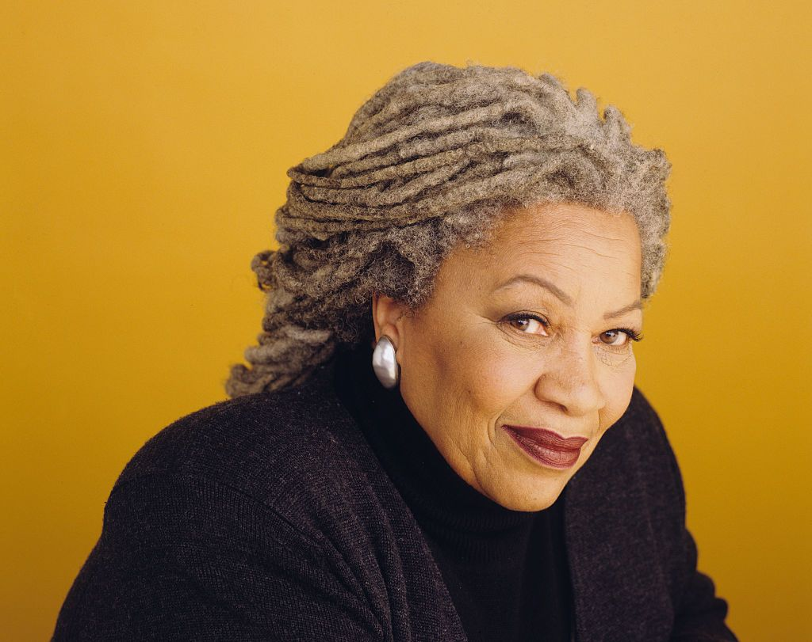

teaching my mother how to give birth: your mother's first kiss - warsan shire
The first boy to kiss your mother later raped women when the war broke out. She remembers hearing this from your uncle, then going to your bedroom and laying down on the floor. You were at school.
Your mother was sixteen when he first kissed her. She held her breath for so long that she blacked out. On waking she found her dress was wet and sticking to her stomach, half moons bitten into her thighs.
That same evening she visited a friend, a girl who fermented wine illegally in her bedroom. When your mother confessed I've never been touched like that before, the friend laughed, mouth bloody with grapes, then plunged a hand between your mother's legs.
Last week, she saw him driving the number 18 bus, his cheek a swollen drumlin, a vine scar dragging itself across his mouth. You were with her, holding a bag of dates to your chest, heard her let out a deep moan when she saw how much you looked like him.
sac·ri·fice
an act of giving up something valued for the sake of something else regarded as more important or worthy.
When I was younger, we went to Burlington for winter coats. It was around the time when layaway was new and my mother couldn’t really afford to buy both of our coats at the same time. She put her own coat on layaway and overspent to make sure that her kids would be warm in the Chicago winter. I can count on my hands the number of times my mother has taken care of herself before she has taken care of us.
In middle school, everyone had iPhones. I remember wanting one so badly, so my mom had did exactly that and gotten me a Black iPhone 4, while everyone else had the 5s or 5c. It didn’t stop there, though, as we went through all of my high school years with no wifi in our home, which meant my phone was not updated and still had the old ios layout.
I remember going to school hiding my phone from everyone because it was old and you could tell. I remember being on the bus and someone grabbed my phone from me and showed everyone how I didn’t have ios 7. I went home crying that day, and even though my mother didn’t have it, she got me a green iPhone 5c months later. My mother would give me the shirt off her back if it meant that my tears would go away.